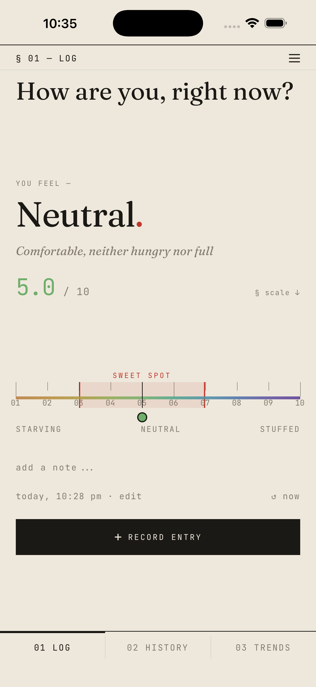
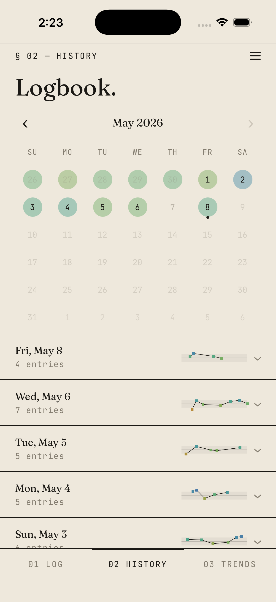
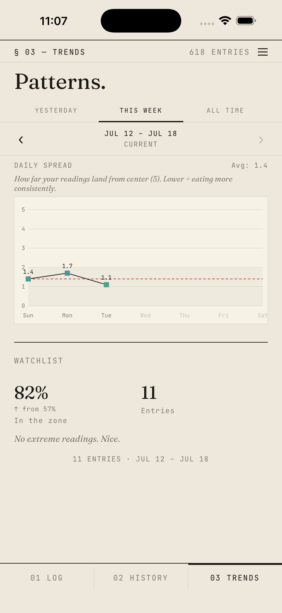
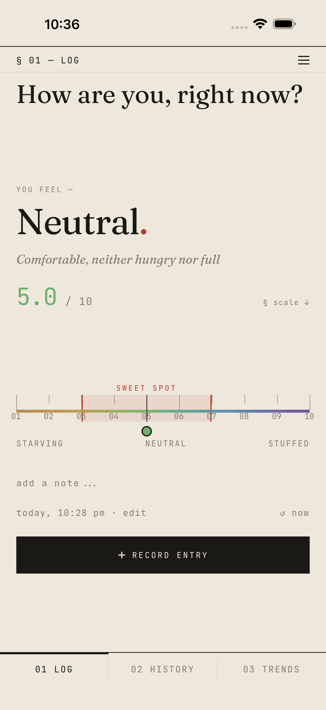

Step 05
Check in from anywhere.
Add a home screen widget to jump straight into a check-in. Tap a number and you’re already halfway there.
Know when to start. Know when to stop.
A mindful hunger and fullness tracker that helps you eat with intention.
Before or after a meal, slide the ruler to match how hungry or full you feel. The big label tells you exactly where you are.
Your logbook keeps every reading. Browse by calendar, expand any day, and spot the rhythm of your week.
A weekly spread shows every check-in at a glance. See which days you stayed in the sweet spot and which ones drifted.
Time-of-day breakdowns, sweet-spot tracking, and all-time patterns. The longer you log, the more you learn.




Aim to eat around 3–4, stop around 6–7.
Slide to rate your hunger or fullness from 1 to 10. Add a note about what you ate and how your body feels.
Browse past entries in a logbook with a calendar view. Tap any day to expand its readings.
Weekly spread charts, zone breakdowns by time of day and day of week, and a watchlist of what to pay attention to.
Optional notifications before meals, after eating, and for an evening reflection. Set your own times.
Tap a number on your home screen to jump straight into a check-in. iOS and Android.
Paper, Dusk, Carbon, or Field Notes. Pick the palette that feels right.
Download everything as a CSV. Your data, your way.
All data stays on your device. No accounts, no servers, no tracking. Your readings are yours alone.
The free version does everything you need. Pro unlocks the full picture.
Every day, not just the last seven.
Time of day, weekly trends, sweet-spot tracking.
Your data, your way.
Dusk, Carbon, Field Notes.
No subscription. No account. One purchase, forever.
Full Stop stores all data on-device. Nothing is sent to a server. No analytics, no tracking, no accounts. Your readings are yours alone. Read the full privacy policy.